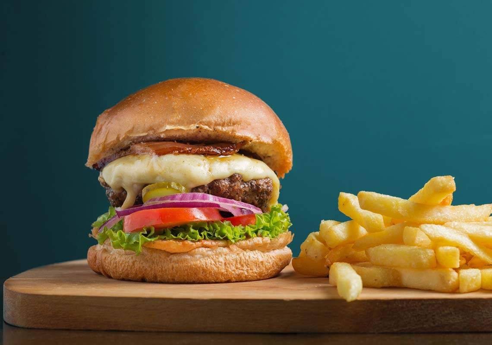
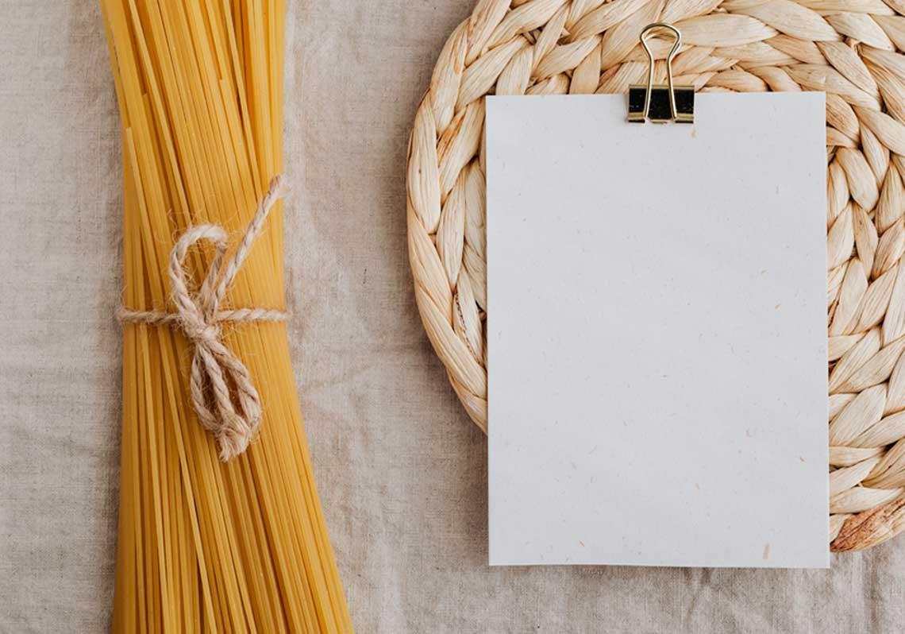
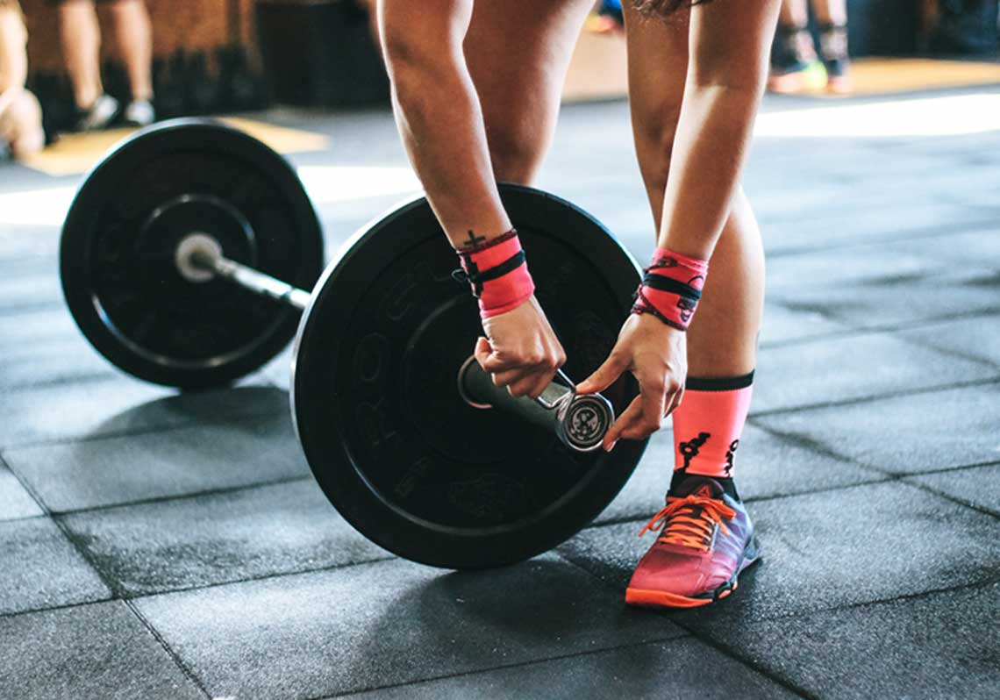
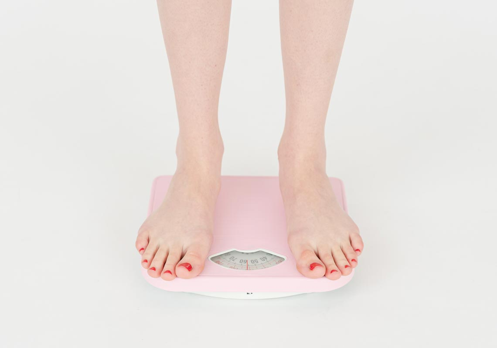

懒人如何减肥？提到減肥，很多朋友看到的減肥方法要麼不是每天從早練到晚，就是天天節食餓到睡不著覺。接下來我將提到的減肥方法，與你之前閱讀過的上百種方法，可能都不一樣。
如果你是這樣的人：不愛運動嘴巴饞，控制不了對食物的熱愛多次減肥失敗，或半途而廢又或者迅速反彈（那麼，來試試我要教給你的這種「零痛苦減肥法」，注意，零痛苦不是誇張，我用這種方法開始減肥以後，比起之前暴飲暴食的日子還要更幸福、更開心。在我們正式開始之前，我需要你知道一條減肥黃金原則，這條原則會貫穿我們整個減肥方法，請你牢記在心：
如果你的減肥方法使你感到痛苦，它一定會導致失敗。
什麼是「零痛苦減肥法」？總的來說，這是一種不強制運動、不需要節食、不必須戒掉高熱量美食，每日攝入超過基礎代謝（以保證健康）但低於整體消耗以製造熱量差，進而長期改變飲食習慣的生活方式。

首先現在，請你拿出一張紙，列出一張清單，把那些致使你發胖的食物，按照喜好程度從高到低，羅列出來。 （越具體越好）
清單列好後，我們進行接下來的動作，把食物進行分類整理：
找出那些相似的選項，比如巧克力麵包、巧克力蛋糕、巧克力威化等，將它們整理成一類。
「必吃」的食物雖然對我們有害、但誰讓我們上癮了呢？這一類食物，建議遵循這樣的原則：不想它的時候不吃，如果想它了，就現買現吃，不要囤貨！吃的時候，不要自責，不要狼吞虎咽，要慢慢享受，當然，如果這時候能夠配合羅氏鮮的話效果會更好；如果你覺得下一口吃不吃無所謂了，那麼立刻停止。剩下的，馬上扔垃圾桶，不要遲疑！
可以選擇「吃不吃無所謂」的食物，這一類食物請戒掉。請你認真思考，例如吃炸雞是因為有炸雞啤酒情節，喝奶茶是因為朋友們都喝，像是趕時髦。其實本身沒有特別愛吃。所以，也不妨想一想，找出相似的食物選項——這個是為了給自己形成一種心理暗示。其實自己喜歡吃的食物並不多。例如現在想吃零食去逛超市的時候，可能只會想起巧克力蛋糕。這樣就不會在超市有那種要買一大堆零食的潛意識。（小tips：列的越細越好，這是為了避免無意識下吃掉太多）

每天吃飯的基本原則：
1.不要抄襲別人的食譜，每個人有每個人的飲食習慣，別人吃了能減肥，你吃了可能是受罪。
2.吃的每一種食物都是自己喜歡的。
3.高脂高熱食物儘量不吃，但一旦因控制食慾而感到委屈，吃油膩食物之前，記得搭配羅氏鮮一起效果會更好喔。

減肥期間是否要做運動？首先答案是肯定的。但是不要很痛苦地去運動，這樣只會讓你過早放棄。運動這件事，也是必須快樂的。如果你也不愛運動，那麼去努力找一些自己覺得還不錯的運動去做，游泳、瑜伽、攀岩...一定有你能接受的運動。

按照上面所說方法持續大約2個月後，當你嘗試吃一口蛋糕，你突然發現，怎麼這麼難吃，太油膩了、太甜了。
咸的零食讓你覺得太鹹了太油了，吃完了還容易不舒服。感覺像加工食物讓你覺得是很不健康的食物，不如天然食物的高貴。那麼就已經成功轉變了觀念，無需刻意地去自我控制了。
所以懶人如何減肥？正確的減肥方法，就是要選擇一種適合自己的減肥生活方式，並能長久堅持；平時要合理控制飲食，盡量少吃高熱量食物，多吃低脂肪食物。當然我們的「羅氏鮮」也是可以幫助大家改善飲食習慣，讓你感覺到「減肥效果」的顯著；注意要一日三餐按時吃飯，避免飲食不規律飢一頓飽一頓。此外，別久坐不動，每天可進行適度的運動，保持有規律地作息也同樣重要，最後希望大家都能堅持下去，健康長遠不復胖！